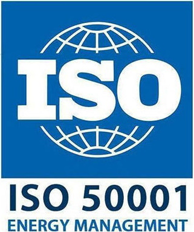
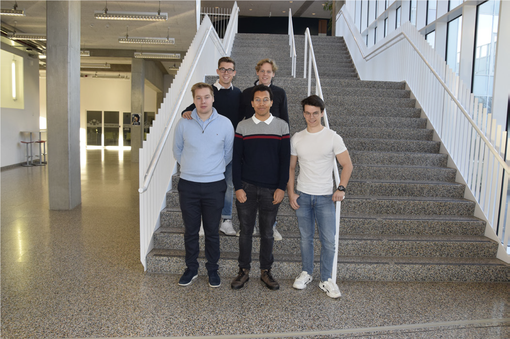

AP projecten
ISO-50001 norm
Project 1
Dit project maakte deel uit van de multiprojecten van het laatste jaar Bachelor Energiemanagement.ISO-50001 is een managementsysteem dat continue moet verbeteren. Dit maakt het gemakkelijker voor bedrijven & organisaties om energiemanagement te gaan implementeren in hun bedrijf.
De basis van een energiemanagement systeem is volgens de PDCA cirkel (Plan, Do, Check & Act).
Eenmaal je een ISO-50001 systeem hebt geïmplementeerd in je bedrijf of organisatie, zal er door middel van een audit getoetst worden of je alle punten van de norm hebt behaald.
Als dit het geval is dan verkrijg je jouw certificaat.
Op de AP hogeschool heb ik de mogelijkheid gehad om mee te werken om dit certificaat te behalen voor de AP Hogeschool.
Voor meer informatie over deze norm kan u op het iso-50001 logo hier onder drukken om te surfen naar de
officiële ISO website

Leerpunten
• Leren werken met de ISO-50001 normering
• Opstellen van procedures
• Sensibiliseren van de mensen op de campus
• Energieverbruik in kaart brengen
• In groepsverband werken & taken inplannen
• Data verzamelen en verwerken
• SMART doelstellingen opstellen
Fotos

Duurzaamheid Copenhagen
Project 2
Met de Internationale projectweek zijn we met de 3de jaar studenten Energiemanagement één week naar Copenhagen geweest.
Copenhagen is nu eenmaal een van de meest duurzame steden in Europa.
De bedoeling was om de duurzaamheid van deze stad te gaan bekijken.
Maar ook om eens na te gaan denken welken van deze duurzame methodes ook van toepassing zouden kunnen zijn hier in België.
Leerpunten
• Internationale ervaring in het buitenland
• Bezoek Amager Bakke warmtekrachtkoppelingcentrale